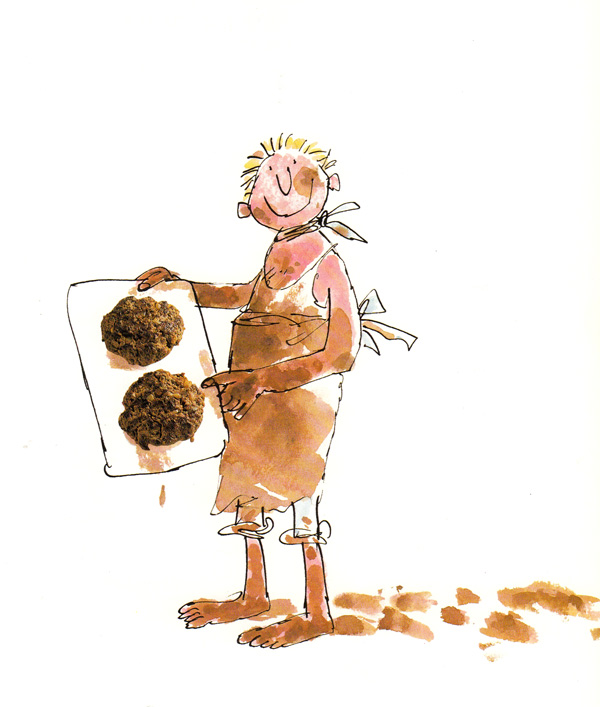

Fresh Mudburgers

Description
"I've eaten many strange and scrumptious dishes in my time... I've eaten fresh Mudburgers by the greatest cooks there are." - The Centipede
Ingredients
- 1 ½ pounds ground beef
- 1 medium onion, chopped
- 3 tablespoons tomato paste
- 2 tablespoons Dijon mustard
- 1 tablespoon Worcestershire sauce
- 2 to 3 tablespoons capers, drained
- ¼ cup chopped fresh parsley
- salt and pepper
- 1 egg, beaten
- relish (optional)
Steps
- In a mixing bowl, break up the ground beef.
- Add all the ingredients except the egg and gently mix together.
- Add the egg, mix thoroughly, and pat into mudburgers.
- Preheat the grill and grill for 4-5 minutes on each side, or fry in a nonstick skillet.
- Serve in a bun with a “revolting” garnish. Relish is ideal!